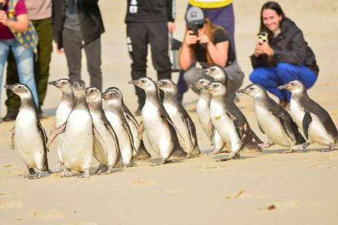
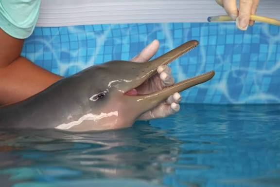
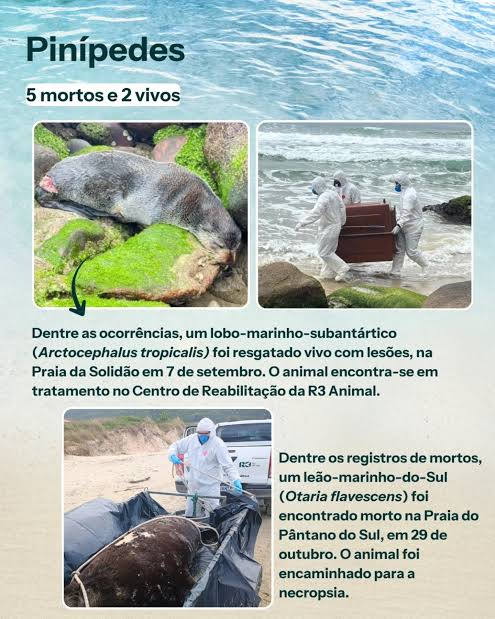
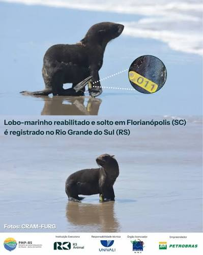
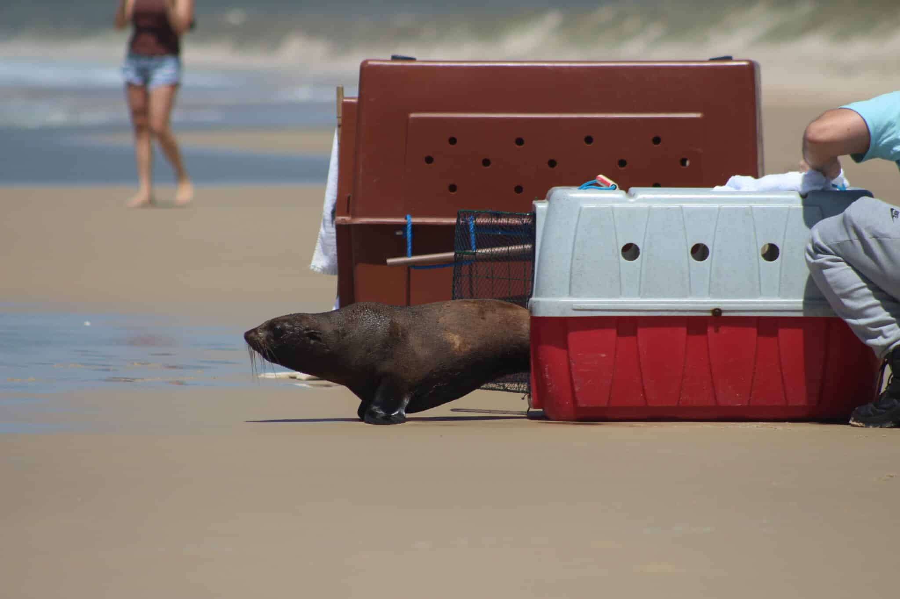
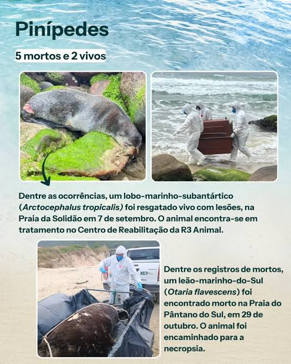
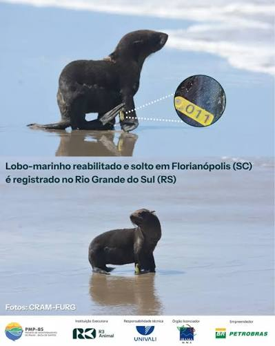
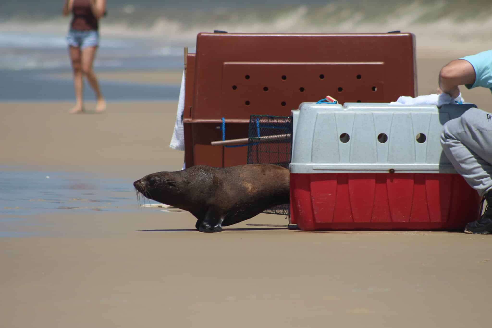

R3 Animal
SOBRE A R3 ANIMAL
a associação r3 animal é uma organização não governamental fundada em 2 de abril de 2000, em florianópolis, santa catarina. sua missão é resgatar, reabilitar e reintroduzir animais silvestres na natureza, além de promover a educação ambiental e a pesquisa científica. a ong atua em parceria com órgãos ambientais, universidades e projetos de conservação para proteger a fauna e conscientizar a população sobre os impactos humanos nos ecossistemas.
PROJETO DE MONITORAMENTO DE PRAIAS
dos principais trabalhos da r3 animal é o projeto de monitoramento de praias da bacia de santos, no qual equipes percorrem diariamente quilômetros de praias para localizar animais marinhos vivos ou mortos. animais resgatados que necessitam de atendimento são encaminhados ao centro de pesquisa, reabilitação e despetrolização de animais marinhos, localizado no parque estadual do rio vermelho.
CENTRO DE REABILITAÇÃO
no centro, espécies como pinguins, tartarugas, golfinhos, aves marinhas e lobos-marinhos recebem cuidados veterinários especializados. são oferecidos alimentação adequada, tratamento clínico, fisioterapia, acompanhamento comportamental e preparação para o retorno à natureza. todos os anos, centenas de animais são reabilitados e devolvidos ao mar.
EDUCAÇÃO AMBIENTAL
por meio do r3educa, a ong realiza palestras, ações em escolas, campanhas de conscientização e atividades culturais voltadas à cultura oceânica e à redução do lixo no mar. a educação é considerada um pilar fundamental para a mudança de hábitos e para a promoção de uma relação mais responsável entre a população e o meio ambiente.
PESQUISA E CIÊNCIA
a r3 animal contribui ativamente para a pesquisa científica em parceria com universidades e institutos. a ong apoia estudos sobre ecologia, saúde da fauna, virologia marinha, impactos da poluição e comportamento animal. também participa de redes de encalhes e de projetos voltados à conservação de aves e mamíferos marinhos.
PARCERIAS
a ong mantém parcerias com o instituto do meio ambiente de santa catarina, o ibama, a polícia militar ambiental, o icmbio, universidades e diversas organizações do setor ambiental. essas colaborações garantem que o atendimento aos animais seja seguro, cientificamente embasado e eficiente.
COMO A POPULAÇÃO PODE AJUDAR
a atuação da r3 animal depende diretamente do apoio da sociedade. a comunidade pode contribuir por meio de doações, voluntariado, participação em campanhas educativas e divulgação do trabalho realizado pela ong. cada gesto fortalece o cuidado com a fauna marinha e ajuda a preservar a biodiversidade para as próximas gerações..
  





Contato
Rodovia João Gualberto Soares, 11.000 Parque Estadual do Rio Vermelho- Rio Vermelho-Florianópolis/SC
contato: +55 48 3018 2316gmail: contato@r3animal.org